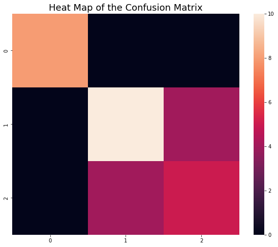
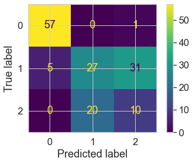
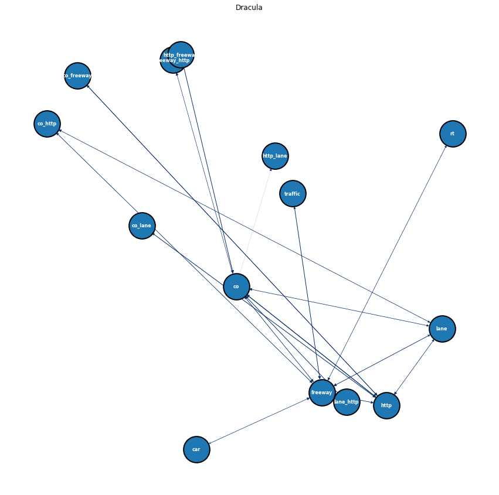

Conclusion
Conclusion
Summary of each section
In this part, I will review the whole project and respectively present the conclusions of each section in the project.
1. EDA part
From the tab of “Exploring Data”, we have acquired these two wordcloud. The first one comes from the tweets about freeway while the second one comes from those about metro.


From the wordcloud of “freeway”, we can find words like traffic, car and driving, because freeway is built for cars to drive and sometimes people may encounter the traffic jam. By contrast, the wordcloud of “metro” contains words including train and station rather than words relevant to driving. It makes sense because metro has stations and specific routes, similar to the train.
Generally speaking, people’s comments towards different means of transportation vary a lot in the aspect of vocabulary use.
2. Naive Bayes part
In this section, we have utilized Naive Bayes for both text data from Twitter and record data about travel mode choice.

This visualization above is a 3-D scatter plot of the distribution of first three principle component after PCA. We can see that there exists obvious difference in data distribution of two labels of data.
In further modeling part, we reach an accuracy of 93.9% on the testing dataset, which means Naive Bayes model perform quite well to classify tweets about to different topics.

This heat map represents for the final confusion matrix of the prediction result of record data using Naive Bayes model. The accuracy on test data is 74%, indicating that the Naive Bayes model did a good job on classification task for this three-category dataset.
3. SVM part
In this section, I utilize SVM to train a classification model for text data acquring from Twitter API.

This heat map of confusion matrix shows that SVM performs quite well on the text data. The proportion that it predicts wrong labels is very small. Actually, this SVM model reaches an accuracy of 0.93 on the test dataset.
This also suggests that when we give a piece of new text data to this SVM model (note that this piece of data needs to follow a similar distribution of the training data), the SVM model can recognize whether it relates to “freeway” or “metro” with a really high accuracy.
In this data modeling process, I actually only need to consider a binary classification problem. In more complicated situation, sometimes we have to deal with those data that contains more than two catagories. For example, there might be classes like “car”, “bus”, “airplane” and “ship”. Under this circumstance, we need to be more careful optimizing and tuning the model.
4. Decision tree part
In this part, I have used decision tree model to predict the travel mode choice based on a series numeric variables:
TTME - terminal waiting time
INVC - in vehicle cost for all stages
INVT - travel time (in-vehicle time) for all stages
GC - generalized cost measure:invc+(invt*value of travel time savings)
HINC - household income
PSIZE - traveling group size
This is the result of tree plot that uses the optimal hyperparameters after tuning. The accuracy of this model on the test data is 0.84, indicating that this decision tree model performs well and does not overfit the training data.
One advantage of decision tree model is that the result of this tree model is interpretable. For instance, from the tree plot above we notice that in the root node, the model split this data by “whether total travel time 211 minutes”. It makes sense that taking the train or long distance bus cost much more time than airplane, that’s why we immediately get a pure leaf under this root node.
However, this data set is relatively small, and therefore the decision tree model might not be robust and stable enough. In future research, it will be a possible way to first do some data augmentation.
5. Clustering part
In this section, I have utilized three different types of clustering algorithms, k-means, DBSCAN, and hierarchical clustering to train the model. To be noticed, different from sections above, clustering is an unsupervised algorithms that does not rely on the target labels.
This is the clustering result of Agglomerative clustering. This 2-D scatter plot shows the distribution and clustering result on two dimensions of the X features. It is obviously that the model have successfully splitted those data points into three distinct groups.
Then we are interested to discuss whether the three clusters output by the algorithms coincide with the original true labels of the dataset.

To our surprise, the result shows that the group categories predicted by clustering algorithms do not coincide with the true label perfectly.
The inconsistency of clustering result and the true labels can be interpreted as follows. The true labels represents for three different choice of travel mode: air, bus and train. These people’s travel data may also includes some hidden pattern other than travel mode choice. For instance, perhaps these three clusters acquired by algorithms represent for passengers with different types, partitioned by a feature that does not exist in the dataset, like age or occupation.
6. ARM part
In this section, I have used ARM and networking to perform on the text data.

With the help of ARM, we can know which words often occurs together in people’s tweets, and we can possibly obtain the hidden relation between different words.
General Conclusion
According to all the analysis and discussion in this study, I am more able to answer the data science questions proposed at the beginning.
Travel time, terminal waiting time, vehicle cost, household income are all important factors contribute to people’s choice of transportation mode. Among these variables, travel time seems to have the highest relationship with the travel mode choice. After the statistical analysis, travel group size are not as important as other factors mentioned above.
As for people’s comments on the Internet, it is absolutely that people’s vocabulary use varies a lot towards different types of transportation. Additionally, the sentiment of the tweets also seems to be different. For example, the average sentiment of tweets shows that comments about “metro” tend to be more neutral compared to those about “freeway”.
Since COVID-19 pandemic broke in 2020, the total ridership and turnover of public transportation drop significantly according to the US Monthly Transportation Statistics.
Finally, this study shows that it is possible to utilize different kinds of machine learning algorithms to predict people’s travel mode choice based on the passengers’ travel information. This may be used in companies of transportation industry. For instance, those companies can obtain uses’s data about travel habit and other travel information through their APPs. Then, they can establish a series of data models to automatically recommend the optimal travel choice that takes time, money, convenience and travel habits in an integrated consideration, which might elevate users’ travel experience.